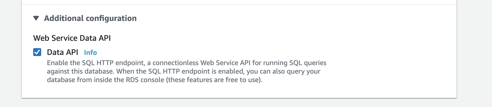
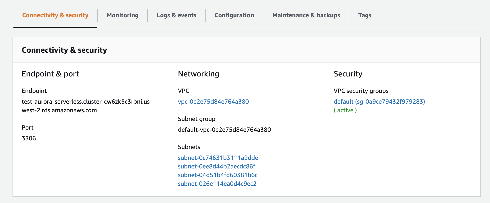

✅ 68 BC (very sure, validated via AWS docs)
小程序选D不对，因为没有CloudHSM instance这种东西，也不存在High Availability Mode. CloudHSM的HA就是通过往cluster里加multi-az的HSM
You can create a cluster that has from 1 to 28 HSMs (the default limit is 6 HSMs per AWS account per AWS Region). You can place the HSMs in different Availability Zones in an AWS Region. Adding more HSMs to a cluster provides higher performance. Spreading clusters across Availability Zones provides redundancy and high availability.
When you create an AWS CloudHSM cluster with more than one HSM, you automatically get load balancing. When you create the HSMs in different AWS Availability Zones, you automatically get high availability.
✅ 357 C (Very sure)
Validated by creating an Aurora Serverless Resource myself.
By using the Data API for Aurora Serverless, you can work with a web-services interface to your Aurora Serverless DB cluster.
为什么C (Aurora Serverles + Data API + IAM + Secrets Manager)可以
Web Service Data API
Authorizing Web Service Data API to access Aurora Serverless
See this aws user guide:
Users don’t need to pass credentials with calls to the Data API, because the Data API uses database credentials stored in AWS Secrets Manager. To store credentials in Secrets Manager, users must be granted the appropriate permissions to use Secrets Manager, and also the Data API.
Users can invoke Data API operations only if they are authorized to do so. You can give a user permission to use the Data API by attaching an AWS Identity and Access Management (IAM) policy that defines their privileges. You can also attach the policy to a role if you’re using IAM roles. An AWS managed policy, AmazonRDSDataFullAccess, includes permissions for the RDS Data API.
The AmazonRDSDataFullAccess policy also includes permissions for the user to get the value of a secret from AWS Secrets Manager. Users need to use Secrets Manager to store secrets that they can use in their calls to the Data API.
为什么 A (Aurora Serverless + NLB)肯定不行
What connectivity does Aurora Serverless Expose
As can be seen on the RDS Console, Aurora Serverless only exposes an endpoint and a port number for connection.
What targets can an NLB have
NLB can have two target types:
- Instance, the Aurora Serverless cluster is not an instance and is not listed in the available targets, as shown in the image below.
- private IP, the Aurora Serverless cluster does not expose an IP. Actually it will have multiple IPs under the hood for inherent HA.
✅ 372: A (Very sure, validated by creating a budget myself)
- Budget有自带的RI coverage/RI utilization, 和Cost Explorer 无关；
- RI Coverage/Utilization 可以Filter by Tag, Instance Family/Type 等
- 可以Alert by SNS topic，也可以手动输入email addresses
所以：
- 这道题要监控RI coverage，排除了RI Utilization的BC；
- RI Coverage是通过AWS Bill and Cost Management Console，排除D的Cost Explorer。
✅ 374 B (Very sure, validated with AWS documents)
详见 https://docs.aws.amazon.com/autoscaling/ec2/userguide/key-policy-requirements-EBS-encryption.html
EC2 Auto Scaling service-linked role
AWSServiceRoleForAutoScalingAWSServiceRoleForAutoScaling_mysuffix
In both cases, you CANNOT edit the roles.
Update key policy to allow service-linked role to use CMK to encrypt instance volumes
- You can specify either role when you edit your AWS Key Management Service key policies to allow instances that are launched by Amazon EC2 Auto Scaling to be encrypted with your customer managed CMK.
- However, if you plan to give granular access to a specific customer managed CMK, you should use a custom suffix service-linked role.
✅ 24 C (more likely)
Least disruption with tagging;
Setting up role-based permission as D does not achieve the separation of resources for each business unit without tagging.
✅ 33 BD (quite sure)
Triggering the remediation Lambda function with CloudWatch Event is more efficient.
361 ✅ BD (Quite sure, explicit blog from AWS)
Why B is enough and C is unnecessary:
Amazon API Gateway adds support for AWS WAF
Previously, if you wanted to secure your API in Amazon API Gateway with AWS WAF, you had to deploy a Regional API endpoint and use your own Amazon CloudFront distribution. This new feature now enables you to provision any API Gateway endpoint and secure it with AWS WAF without having to configure your own CloudFront distribution to add that capability.

You can protect these resources with WAF Web ACL:
- Amazon CloudFront,
- Amazon API Gateway,
- Application Load Balancer
- AWS AppSync
WAF Web ACL rules
You can use criteria like the following to allow or block requests:
- IP address origin of the request
- Country of origin of the request
- String match or regular expression (regex) match in a part of the request
- Size of a particular part of the request
- Detection of malicious SQL code or scripting
- Rate limit: For a rate-based rule, enter the maximum number of requests to allow in any five-minute period from an IP address that matches the rule’s conditions. The rate limit must be at least 100.
小程序选的D是对的
Logging web ACL traffic information
You send logs from your web ACL to an Amazon Kinesis Data Firehose with a configured storage destination. After you enable logging, AWS WAF delivers logs to your storage destination through the HTTPS endpoint of Kinesis Data Firehose.
✅ 370 D (Very very sure)
See note on the ⚠️Note from AWS doc:
The dead-letter queue of a FIFO queue must also be a FIFO queue. Similarly, the dead-letter queue of a standard queue must also be a standard queue.
题目里明确说了是Standard Queue，所以应该选D，不是C
✅ 360 A (Very sure, validated with docs)
See Data Lifecycle Manager (DLM) documentation:
For each schedule, you can define the frequency, fast snapshot restore settings (snapshot lifecycle policies only), cross-Region copy rules, and tags.
358 ✅ A, D (A very sure based on aws docs, D quite sure based on tech blogs)
A buffer that automatically scales
- The capacity limits of an Amazon Kinesis data stream are defined by the number of shards within the data stream. You need to scale it yourself by changing the number of shards.
- Kinesis Data Firehose is a fully managed service that automatically scales to match the throughput of your data and requires no ongoing administration.
Near real-time visualization
ElasticSearch has near real-time search capacity:
When a document is stored in Elasticsearch, it is indexed and fully searchable in near real-time–within 1 second.
✅ 354 C (More likely)
Serving application with S3, API gateway and Lambda is more scalable and has less overhead.
✅ 348 C (Very sure, validated with DX Gateway doc)
Direct Connect gateways cannot be associated with Public Virtual Interface
Use AWS Direct Connect gateway to connect your VPCs. You associate an AWS Direct Connect gateway with either of the following gateways:
- A transit gateway when you have multiple VPCs in the same Region
- A virtual private gateway.
Choosing between Public Virtual Interface and Private Virtual Interface
Public VIF
- Connect to all AWS public IP addresses globally.
- Create public virtual interfaces in any DX location to receive Amazon’s global IP routes.
- Access publicly routable Amazon services in any AWS Region (except the AWS China Region).
Private VIF
- Connect VPC resources (such as Amazon Elastic Compute Cloud (Amazon EC2) instances or load balancers) on your private IP address or endpoint.
- Connect a private virtual interface to a DX gateway. Then, associate the DX gateway with one or more virtual private gateways in any AWS Region (except the AWS China Region).
- Connect to multiple VPCs in any AWS Region
✅ 352 C (More operationally efficient)
Creating a trail for an organization:
- If an AWS account is added to an organization, the organization trail and service-linked role will be added to that AWS account, and logging will begin for that account automatically in the organization trail.
- If you have created an organization in AWS Organizations, you can create a trail that will log all events for all AWS accounts in that organization.